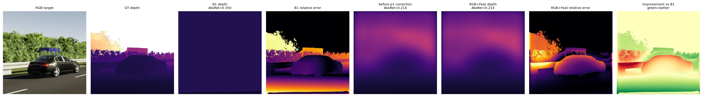
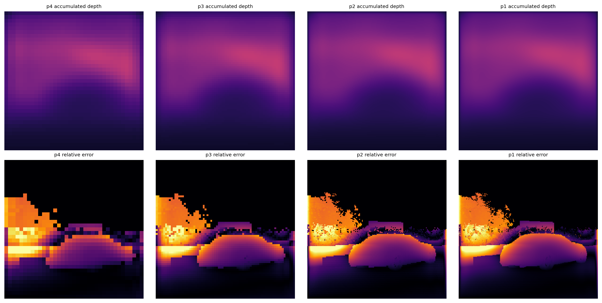
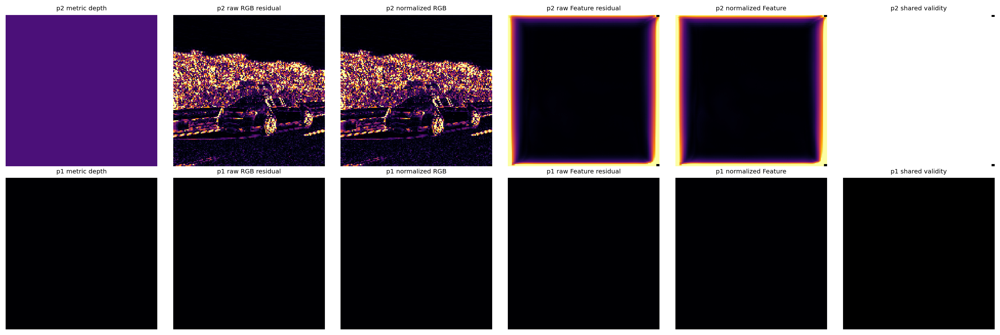
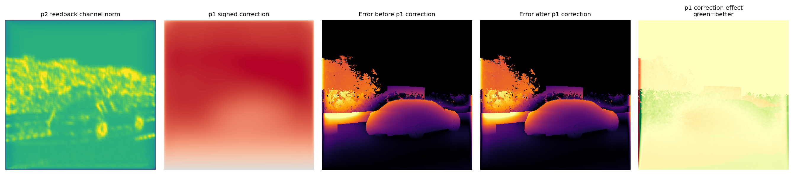
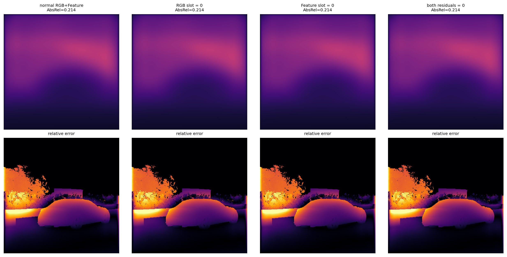

GemDepth · error-map / perlayer / multiscale 实验结果汇总
分支 feat/exp-cycle-loss · 生成于 2026-07-10 · 2026-07-12 增补 multiscale（阿里云 DSW · 分支 bugfix/clean）见 §⑥ · 2026-07-14 增补 from-scratch backbone 消融（分支 exp/scratch-ed-backbones）见 §⑦ · 单位：AbsRel/RMSE 越小越好，δ1 越大越好，TAE 越小越时序一致
怎么读： baseline 行（蓝底）= 未加改进的原始 head；method 行（绿底）= 各改进方案。
单帧精度看 KITTI/VKITTI AbsRel；时序一致性看 TAE。
① 单帧精度 · KITTI Eigen（合成 VKITTI 训 → 真实 KITTI 测）
| 方案 | AbsRel↓ | RMSE↓ | δ1↑ | 说明 |
|---|
| zero-shot (gemdepth.pth) | 0.0678 | 3.110 | 0.9585 | 未微调，上限参考 |
| baseline (VKITTI finetune, lr1e-5) | 0.0677 | 3.167 | 0.9571 | 基准 |
| baseline lr1e-4 | 0.0712 | – | – | LR sweep |
| baseline lr5e-5 | 0.0691 | – | – | LR sweep |
| baseline lr1e-6 | 0.0681 | – | – | LR sweep |
| perlayer (deep-sup, 旧架空版) | 0.0680 | 3.158 | 0.9574 | ≈baseline（主输出=output_conv） |
| em_single · feat | 0.0847 | 4.010 | 0.9278 | error-map v3（AbsRel最优臂） |
| em_single · rgbfeat | 0.0863 | 3.757 | 0.9300 | RMSE/δ1最优臂 |
| em_single · hog | 0.0873 | 4.075 | 0.9232 | error-map v3 |
| em_single · rgb | 0.0883 | 4.098 | 0.9230 | error-map v3 |
结论1（单帧）： 旧 error-map v3（em_single 四臂）单帧全部劣于 baseline（0.085~0.088 vs 0.0677）；
perlayer 旧版≈baseline（因为主输出还是预训练 output_conv，改进被架空）。→ 这正是重做级联 perlayer（p1 用 output_conv 打底 + 逐层 refine/errmap）的原因。
② 单帧精度 · VKITTI held-out（域内）
| 方案 | AbsRel↓ | RMSE↓ | δ1↑ |
|---|
| baseline | 0.0690 | 4.607 | 0.9516 |
| zero-shot | 0.0669 | – | – |
| em_single 四臂 | 0.0795 ~ 0.0832 | – | – |
③ 时序一致性 · TAE（VKITTI，越低越一致）
| 方案 | TAE mean↓ | TAE median↓ | 相对 baseline |
|---|
| perlayer_hog | 0.00169 | 0.00181 | –11% |
| perlayer (warp) | 0.00170 | 0.00167 | –10% |
| perlayer_ds05 | 0.00177 | 0.00135 | –6% |
| perlayer_nowarp | 0.00186 | 0.00132 | –2%（≈baseline） |
| baseline | 0.00189 | 0.00188 | 基准 |
| perlayer_rgb | 0.00216 | 0.00156 | +14% |
| em_single · rgbfeat | 0.00205 | 0.00178 | +8% |
| em_single · hog | 0.00208 | 0.00212 | +10% |
| em_single · rgb | 0.00254 | 0.00234 | +34% |
| em_single · feat | 0.00308 | 0.00286 | +63% |
⚠ TAE 可靠性提醒： 这批 TAE 是确定性修复之前跑的——dataset 的 StatefulRandomCrop 每次随机裁剪，导致 baseline 同 ckpt 跑出 0.00189 / 0.00218 两个值、且各 arm 之间不严格可比。
已修（seed + 单进程），需用修复后的 eval_tae_all.sh 重跑一遍才能进正式表。趋势（perlayer < baseline < em_single）可参考。
结论2（时序）： perlayer 系时序一致性优于 baseline，且 perlayer(warp) 0.00170 < perlayer_nowarp 0.00186 → warp 那步对时序有正贡献；旧 em_single 反而更差。
④ 进行中 / 待更新
| 项目 | 状态 | 说明 |
|---|
| multiscale（多尺度 refine · 阿里云） | ✓ 已修复重训 | 修复后 AbsRel 0.0725 追平 baseline（详见 §⑥） |
| perlayer_refine（级联纯refine） | 待起训 | 4层级联，p1 用 output_conv 打底 |
| perlayer_errmap（级联+每层errmap） | 待起训 | 方案二，对着单帧优化 |
| eval_full（AbsRel 完整表） | 运行中 | KITTI+VKITTI 全 arm，输出 eval_full_summary.csv |
| TAE 重跑（确定性修复后） | 待跑 | eval_tae_all.sh，验证两次同值 |
| batlin 重跑（warp 修复后） | 运行中 | 之前 warp 失效，已修复重训 |
⑤ 关键发现速记
- error-map v3（em_single）单帧全负：4 臂 0.085~0.088，均劣于 baseline 0.0677。
- perlayer 时序赢、warp 有效：TAE perlayer 0.00170 < baseline 0.00189 < em_single；perlayer(warp) < perlayer_nowarp。（TAE 待重跑确认）
- 旧 perlayer 单帧被架空：主输出=预训练 output_conv，refine/warp 只做辅助 → 单帧≈baseline。
- 已重构级联 perlayer：p1 用 output_conv 打底（起步=baseline）+ 逐层 refine(方案一)/errmap(方案二)，每层 4 个单帧 loss，直接对单帧优化。待训练验证能否把单帧顶过 baseline。
⑥ multiscale 多尺度 refine（2026-07-12 · 阿里云 DSW 新增）
分支 bugfix/clean · 协议同上：head_only + VKITTI + 10k step + lr1e-4（同配方对照 = §① baseline lr1e-4 = 0.0712）。
head = DPT 金字塔 4 尺度由粗到细残差细化：depth_i = upsample(depth_{i-1}).detach() + Δ_i，每尺度一个 delta_head，detach 截断跨尺度梯度。训练 loss 56.4→4.85 收敛，无崩溃。
| 方案 | AbsRel↓ | RMSE↓ | δ1↑ | 说明 |
|---|
| baseline lr1e-4（同配方对照） | 0.0712 | — | — | temporal head（来自 §①） |
| multiscale · 原始输出（当逆深度评测） | 0.2430 | 8.138 | 0.523 | 评测错配 → 虚高 |
| multiscale · 输出取倒数(depth→disp)再评测 | 0.1435 | 5.936 | 0.806 | 纠正错配后仍劣于 baseline |
| ★ multiscale_fix · 逆深度空间 aux 重训 | 0.0725 | 3.267 | 0.950 | 修复后直接评测(不取倒数)，追平 baseline |
根因（代码实锤）：multiscale 输出 min/median/max = 4.73 / 26.1 / 195.3 → 是米制深度（逆深度应为 0.01~0.3）。
病根 = aux_depth_weight=1.0（errormap/perlayer 仅 0.1）配合 compute_aux_depth_loss 的绝对深度 L1（|aux − depth_gt|，未取倒数）；
而主损失 SSI 监督到逆深度（1/depth_gt，见 loss/videoloss.py）。两损失空间相反、同强度拉扯 → 输出被拽向米制深度；eval 却按逆深度做 lstsq 对齐 → 倒数错配 → AbsRel 虚高 0.243。取倒数只能救回一部分（0.243→0.143），救不回训练时的空间冲突。
aux_depth_weight 对比（放大器）： baseline 0.0 · errormap 0.1 · perlayer 0.1 · multiscale 1.0。0.1 时主损失(逆深度)主导、输出仍逆深度 → eval 正确（0.08 档）；1.0 时输出被拉走 → eval 错配（0.243）。
根因结论：原 multiscale ckpt 被污染（损失空间自相矛盾），0.243 / 0.143 都不代表多尺度 refine 的真实效果。
✓ 修复已验证（multiscale_fix，2026-07-13）：方案A 根治——新增 compute_aux_depth_loss_disp（逆深度空间 1/depth_gt + 每样本 SSI 对齐），仅新 config single_a100_multiscale_fix.yaml 打开 aux_depth_space=disparity，师兄原 head/config/loss 三文件零改动（分支 exp/multiscale-aux-disp）。重训后 AbsRel 0.243→0.0725、δ1 0.523→0.950，直接评测(不取倒数)即回正，实锤根因。
方法结论：修复后多尺度 refine 追平 baseline（0.0725 vs 0.0712），单帧精度无明显增益也无损害——之前的“差”纯属评测错配。要体现其价值还需看时序一致性(TAE)或进一步优化 head。
⑦ from-scratch encoder+decoder · backbone 消融（2026-07-14 · 阿里云 DSW · 分支 exp/scratch-ed-backbones）
与 §①–⑥ 不同的新协议：不加载 gemdepth.pth，只加载 DINO 预训练；baseline = 只 encoder+decoder（关 GEM/ASTT），backbone 冻结 + LoRA 微调，DPT head 从头训 20000 步（VKITTI，总 batch 8）。
→ 这是 from-scratch，不能直接与 §① 的 head-only 微调 baseline 0.0677 比数值，只作本组内部（三 backbone、静态 vs 时序）横向对照。三个静态实验用同一 crop 448 保证公平。
| 实验 | backbone（参数） | head | AbsRel↓ | RMSE↓ | δ1↑ | 状态 |
|---|
| 1a · DINOv2 ViT-L · 静态 | ViT-L (305M) | temporal | 0.1003 | 3.669 | 0.918 | ✅ 有效 |
| 1b · DINOv3 ViT-S+ · 静态 | ViT-S+ (28.9M) | temporal | 0.1277 | 5.479 | 0.881 | ✅ 有效（三者最弱，最小 backbone） |
| 1c · DINOv3 ConvNeXt-s · 静态 | ConvNeXt-s (50M) | temporal | 0.0930 | 3.733 | 0.923 | ✅ 有效 · 静态最强 |
| 2 · DINOv2 ViT-L · 时序 4 帧 | ViT-L (305M) | temporal | 0.0832 | 3.408 | 0.940 | ✅ 有效 · 整体最强 |
| 3 · DINOv2 · 多尺度 · 时序 4 帧 | ViT-L (305M) | multiscale | — | — | — | ⏳ 崩溃重训中 |
✓ 1b（DINOv3 ViT-S+）已修复重训（_v2 · @97fb77c）：原 0.391 是 dying-ReLU 训练塌缩——从头训的 DPT head 末层卷积初始化全负 → ReLU 杀输出+梯度 → loss 全程平在 1.15、输出恒 0。加抗死初始化（末层卷积 zero-weight + 正 bias）后重训，loss 正常 1.33→0.060，AbsRel 0.391→0.1277、δ1 0.316→0.881。→ ViT-S+ 从头训确实能学，之前纯属初始化死区；它是三者中最弱的（28.9M 最小 backbone），属合理结果。
⏳ 3（multiscale）崩溃 → 已修：报错 "Parameter marked ready twice"。根因（师兄质疑后深挖）：DPT 结构性地有未用参数——refinenet4.resConfUnit1（顶层 fusion block 单输入、天生跳过它，所有 head 都有）+ multiscale 额外绕过 output_conv；原 find_unused_parameters=True 正是为兜这些未用参数而开，却与多尺度多分支反向冲突 → 双标记崩。多分支反向本身没问题（temporal head 同样 find_unused=True 却没崩，因单分支）。static_graph=True（@72df22e）是正确鲁棒解：一次性记录静态图的用/不用集合，同时处理未用参数+多分支。实测反证：改 find_unused=False 会因这些结构性未用参数在第 0 步 DDP 死锁（不只 multiscale，所有实验都会）。3_v2 正常重训中。
本组有效结论（1a / 1c / 2）：
- 静态 backbone 排序（三者全有效）：ConvNeXt-s 0.0930 > DINOv2 ViT-L 0.1003 > ViT-S+ 0.1277。关键：DINOv3 ConvNeXt-s（50M）反超 DINOv2 ViT-L（305M），小 6 倍却更好；ViT-S+（28.9M 最小）最弱但有效。→ 层级 ConvNeXt 特征最划算。
- 时序有增益：DINOv2 时序 head 0.0832 < 同 backbone 静态 0.1003，约 +0.017 AbsRel、δ1 0.940 vs 0.918。
- caveat：from-scratch 20k 步 ≠ head-only 微调，不与 §① baseline 0.0677 同档；评测因 KITTI 宽图缩放到 ~272（1a/1b/1c/2 一致）。3（multiscale）修复重训中，训完补。
⑧ GT-camera oracle · 多尺度 error-feedback 五臂（2026-07-15 · Scene20 held-out）
独立 held-out 协议：DINOv2 ViT-L + LoRA，T=4，关 GEM/ASTT；训练显式排除 Scene20，测试只包含 Scene20。GT K / world-to-camera extrinsics 仅供 oracle warp，GT depth 不进入模型输入；主输出按每 clip SSI 对齐到 GT inverse depth，再于 80 m 范围计算指标。该表不能与 KITTI 或 §①–⑦ 的不同 split 直接横比。
| 实验臂 | error signal | AbsRel↓ | RMSE↓ | δ1↑ | 评估量 | 状态 |
|---|
| Multiscale-only baseline（无 error feedback） | — | 0.444656 | 15.126310 | 0.288045 | 2088 clips · 8352 frames | ✅ 完整评估 |
| GT-error · RGB | RGB warp residual + validity | 0.248834 | 11.669141 | 0.574748 | 2088 clips · 8352 frames | ✅ δ1 最优（与 Feature 近乎并列） |
| GT-error · Feature | DPT feature warp residual + validity | 0.233081 | 8.612631 | 0.574575 | 2088 clips · 8352 frames | ✅ AbsRel / RMSE 最优 |
| GT-error · Geometry | metric-depth consistency + validity | 0.462033 | 15.347888 | 0.259086 | 2088 clips · 8352 frames | ✅ 劣于 baseline |
| GT-error · RGB+Feature | RGB + feature residuals + validity | 0.303622 | 12.370620 | 0.516473 | 2088 clips · 8352 frames | ✅ 不及单 Feature / RGB |
| Metric log-depth fix only | 旧 DPT/warp + 修复 metric clamp 死区 | 0.229364 | 10.451446 | 0.609936 | 2088 clips · 8352 frames | ✅ 证明 metric branch 修复有效 |
| ★ Baseline-anchored DPT + Warp v2 | 4层锚定 readout + pixel-center warp + fixed error scale | 0.084935 | 4.958671 | 0.897651 | 2088 clips · 8352 frames | ✅ 当前整体最优 |
✓ 五臂最终结论：
- 完整 Feature-feedback architecture 是当前首选：相对 multiscale-only baseline，AbsRel 降 47.6%（0.4447→0.2331），RMSE 降 43.1%（15.13→8.61），δ1 提升 28.65 个百分点。它相对 RGB arm 仍将 AbsRel 降 6.3%、RMSE 降 26.2%。但该 47.6% 同时包含 metric-depth heads、p2 error encoder、p2→p1 feedback 与 p1 correction 的容量，不能全部归因于 Feature residual 本身。
- RGB 的 δ1 仅以 0.000173 绝对值领先 Feature（0.574748 vs 0.574575，约 0.017 个百分点），远小于其 AbsRel/RMSE 劣势，不能据此宣称 RGB 整体更好；下一阶段固定用 Feature。
- 简单拼接无协同：RGB+Feature（0.3036）反而弱于两种单流，说明双流残差存在干扰，不能把“更多信号”直接等同于更强。
- 纯几何 depth-consistency 失败：Geometry 比 baseline 的 AbsRel 高 3.9%、RMSE 高 1.5%、δ1 低 2.90 个百分点；当前 metric-depth 预测误差/遮挡判断会使几何残差成为噪声，不应进入下一阶段。
论文边界：这是 GT-camera oracle，只证明“在正确相机几何下，完整 Feature-feedback architecture 能显著改善 held-out 合成域深度”；尚不能声称部署时无需 GT pose，也不能直接外推到 KITTI。四个 error-signal 臂参数量与 loss 结构一致，可公平比较信号；baseline 没有 metric-depth/error-feedback 分支，因此它衡量的是完整方法增益，而不是单独某一通道的纯变量消融。Feature 目前只是下一阶段的候选，在补齐 null-error 容量对照与逐层可视化前，不把 47.6% 写成 Feature error 的净贡献。
评估量说明：底层发现 2090 个 clip；DepthVideoDataset.__len__() 向下取四的倍数，实际一致评估 2088 clips / 8352 frames。五臂样本完全一致，当前排序公平。随机种子 20260714。报告字段已于 3b9e7d8 修正；指标本身无需重算。
表 8 baseline / 表 7 数字为何不能直接比较：表 8 的 baseline 不是表 7 的最简单 temporal DPT，而是 DINOv2 ViT-L + LoRA + T=4 + multiscale refine，仅去掉 metric-depth/error-feedback 分支；训练还显式排除 Scene20，并在 Scene20-only 上评估。表 7 的 0.0832 则是 temporal head、全 VKITTI 训练（包含 Scene20）、KITTI Eigen 测试。两者 head、训练 split、测试域和 evaluator 均不同，所以 0.0832 vs 0.4447 不能解释为 multiscale 退化。要测 multiscale 的净贡献，必须补同一 Scene20-held-out 协议的 temporal baseline。
| 待补控制 | 结构 | 回答的问题 |
|---|
| B0 · Temporal DPT | 最简单 temporal head | 同 split 的真正基础线 |
| B1 · Multiscale-only | 当前表 8 baseline | multiscale 相对 temporal 的净贡献 |
| B2 · Null-error capacity control | 保留 metric heads / encoder / correction，error 恒为 0 | 额外网络容量本身的贡献 |
| M · Feature feedback | 完整 Feature arm | Feature error 相对等容量 B2 的净贡献 |
RGB+Feature 为何变差：当前只有实现事实，没有因果结论。实现为 p2/p1 上分别计算并各自按帧均值归一化的 RGB residual 与 L2-normalized DPT feature residual，再直接组成 [E_rgb, E_feat, validity]，送入同一个 3→64→256 error encoder；没有 learned gating、独立分支编码、modality confidence 或 disagreement handling。独立归一化会抹去两种信号的相对可信度；两者又共享 metric depth、相机与 warp grid，可能高度相关而非互补。但“RGB 噪声干扰 Feature / 两流冗余 / normalization 或 fusion 有问题”目前都只是待验证假设，不能仅凭最终指标下结论。
必须补的可视化与统计（无需重训）：从同一个 RGB+Feature checkpoint、同一个固定 Scene20 clip 导出 p2/p1 的两个 residual slot、validity、predicted metric depth、p2 feedback norm、p1 signed correction，以及相对 B1 的 improvement map；全 Scene20 统计两 residual 的 Pearson/Spearman、top-10% overlap、saturation、valid coverage、与真实 depth-error 的相关性，以及 correction 改善/恶化像素比例。当前 head 已缓存 error_maps/valid_maps/metric_depths，其余可用 forward hook 获取。
HOG 可视化与实现 caveat（旧 em_single HOG，不属于表 8 Geometry）：
sqrt(gx²+gy²+eps) 使平坦区也有非零 magnitude，随后逐像素 L2 normalization 会把人工底噪放大；eps 应只放在归一化分母。- 现有彩色图以“归一化 HOG 各 bin 之和”作为亮度、
argmax bin 作为 hue；它不是真实 Sobel magnitude，也不是经典 cell/bin glyph HOG。低梯度区仍被强行赋予方向，容易出现大片伪彩色。
- 训练时 HOG 直接读取 ImageNet-normalized 模型输入；可视化脚本先反归一化到 [0,1] 再算 HOG，两者信号不一致。
cell=8 的偶数 avg-pool kernel 配合 padding=4 会产生 H+1/W+1 后再插值回去，可能引入轻微空间偏移。
因此旧 HOG 图不能作为正确性证据，旧 HOG arm 结果也需带 caveat；若继续该方向，应统一输入、修 magnitude floor、屏蔽低梯度方向、改用原始 magnitude + 经典 HOG glyph 可视化，并重训 HOG arm。
⑨ GT-error 逐层可视化审计（2026-07-16 · Scene20 sample0）
样本与干预：Scene20 / 15-deg-left / frame 0–3，展示 frame 1；固定 seed=20260714。同一个 RGB+Feature checkpoint 上分别执行 normal、RGB residual 清零、Feature residual 清零、两 residual 同时清零。干预仅清零 residual slot，
保留 validity；指标仍做 clip-level SSI 对齐，因此它检验的是“residual 是否改变可评估的深度形状”，不能排除仅改变全局 affine scale/shift 的微小作用。原始统计见
summary.json。

图 9-1 · 总览。RGB+Feature 相对 B1 的 sample0 clip-level AbsRel 为 0.2136 vs 0.3495；改善主要表现为大范围低频深度趋势，而非物体边缘的局部修正。p1 correction 前后为 0.213576 vs 0.213579，几乎无贡献。

图 9-2 · p4→p1 累计深度。高分辨率层没有明显恢复汽车、树木等几何细节，输出逐层转向平滑低频梯度。该现象提示 multiscale delta 路径也需后续审计，但不能在 error geometry 尚未有效前据此先修改 DPT。

图 9-3 · 最关键证据。p2 metric depth 近似常数，validity=97.8%；p1 metric depth 近乎归零，RGB/Feature residual 与 validity 全黑（validity=0）。p2 Feature residual 主要呈矩形边框而非场景结构，raw mean 仅 3.56×10⁻⁵，逐帧均值归一化可能将边界/数值伪影大幅放大。

图 9-4 · feedback / correction。p2 encoder 确实输出非零 feedback norm，但其是否由 residual、validity 或 bias 驱动尚未分离；p1 error 三通道全零时 correction 仍非零，证明它可退化为 feature-only correction。其前后 SSI 指标几乎不变。

图 9-5 · inference-time counterfactual。normal / no-RGB / no-Feature / zero-residuals 的 AbsRel、RMSE、δ1 完全相同到打印精度，SSI-aligned 深度图也无可见差异。严格结论是：该 sample 上 residual 值未改变可评估深度形状；尚不能把完整架构增益归因于 error residual。
| 模块 | 实际证据 | 当前判断 | 修改顺序 |
|---|
| Metric-depth head / loss | p2 近常数；p1 近零；p1 validity=0 | 首要根因候选。当前 loss 使用 log(clamp(pred,1e-3))；Softplus 输出跌破阈值后 clamp 区域梯度为 0，存在不可恢复的低值塌缩路径。 | 第 1 |
| Warp 投影核心 | 同一实现 p2 validity=97.8%，且解析平面测试此前通过 | 当前没有证据表明 ext_s @ inv(ext_t) 或 grid 公式是首要 bug；p1 全失效更符合输入 metric depth 塌缩。修 metric depth 后再用 GT depth 替换测试确认。 | 第 2（验证，不先重写） |
| Error normalization | p2 Feature raw mean=3.56×10⁻⁵，归一化图被矩形边框主导 | 按自身极小均值放大可能突出 padding/warp 边界伪影。需在 geometry 有效后加入绝对 floor、robust percentile 或 confidence gating。 | 第 3 |
| Fusion / correction | residual 清零后 SSI 指标不变；p1 correction 前后不变 | 当前 residual 对 sample0 的可评估形状没有作用；还需补“validity-only / 三通道全零 / raw output max-diff”以区分 validity、bias 与纯 affine 作用。 | 第 4 |
| Multiscale DPT | p4→p1 越来越平滑，细节未恢复 | 是次级结构问题，但现在先改 DPT 会与上游无效 geometry 混杂，无法判断改动价值。 | 最后 |
本轮定位结论（仅 sample0，不外推全 Scene20）：问题首先出在 metric-depth branch / supervision，它向 warp 提供了近常数乃至近零深度，导致 p1 warp 全部无效；不是先把问题归咎于 warp 矩阵实现，也不应先改 DPT。随后才是 error normalization 与 fusion。下一步只改第一个模块：移除 metric loss 的 clamp 死区、为 p1/p2 metric depth 加范围/梯度/validity 健康检查，并用同一 clip 验证 p1 validity 恢复；确认后再逐模块推进。
⑩ 修复后最终结果（2026-07-17）
| 方案 | AbsRel↓ | RMSE↓ | δ1↑ | 相对 B1 |
|---|
| B1 · Multiscale-only | 0.444656 | 15.126310 | 0.288045 | 基准 |
| 旧 RGB+Feature | 0.303622 | 12.370620 | 0.516473 | AbsRel −31.7% |
| Metric log-depth fix only | 0.229364 | 10.451446 | 0.609936 | AbsRel −48.4% |
| ★ Baseline-anchored DPT + Warp v2 | 0.084935 | 4.958671 | 0.897651 | AbsRel −80.9% |
确定性结果：
- 只修 metric log-depth dead zone 已把 AbsRel 从旧 RGB+Feature 的 0.3036 降到 0.2294（相对 B1 降 48.4%），证明旧 p1 metric-depth 塌缩确实是主要故障之一。
- 完整 v2 达到 0.0849 / 4.959 / 0.8977，相对 B1：AbsRel 降 80.9%、RMSE 降 67.2%、δ1 提升 60.96 个百分点；相对 metric-fix-only，AbsRel 再降 63.0%。
- v2 的最终四层 validity 为 p4/p3/p2/p1 = 0.792/0.850/0.874/0.889，metric floor fraction 全为 0，旧 p1 validity=0 的故障已经消失。
不能过度解释：v2 同时修改 baseline anchor、四层共享 readout/loss gauge、feedback 注入位置、pixel-center warp、occlusion/border validity、Feature cosine 与 fixed error scale；因此 0.0849 是组合系统结果，不能归因于其中单个模块。Same-split Temporal B0 和 null-error 容量对照仍未补，随机种子也只有一个。
最终 sample0 四层质量：metric depth 与 warp validity 均健康，说明“每层 depth 对应同尺寸 target/warped image”的实现已成立；但 SSI relative error 为 p4 0.23119 → p3 0.22088 → p2 0.22093 → p1 0.22105。只有 p4→p3 明显改善（−4.46%），p3→p2/p1 轻微反弹。因此当前可说四层几何正确、整体模型有效，但还不能说每一层都持续提高深度；高分辨率 p2/p1 refine 仍有优化空间。
数据来源：docs/ERRORMAP_DEVLOG.md · eval_full / eval_tae 输出 · 训练 tensorboard · multiscale 来自阿里云 output_eval/ · GT-camera oracle 来自 results/gt_error_scene20/*.json。TAE 为修复前数据，重跑后本表将更新。
{kind=link}
{kind=link}
{kind=link}
{kind=link}
{kind=link}